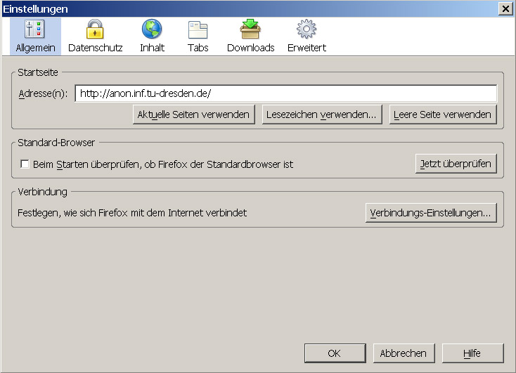
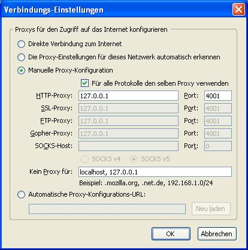
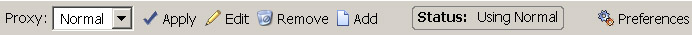

Einstellungen für verschiedene Browser
JAP in Mozilla-Firefox einrichten
Um JAP in Mozilla-Firefox einzurichten gehen Sie folgendermaßen vor :
1.) Wählen Sie im Menü "Tools" das Untermenü "Einstellungen...". Danach öffnet sich das Einstellungsfenster. Wählen Sie in diesem den Punkt "Allgemein" :

2.) Um den Proxyserver einzustellen klicken Sie auf die Schaltfläche "Verbindungs-Einstellungen...". In dem Fenster das sich nun öffnet wählen Sie "Manuelle Proxy-Konfiguration" aus. Wählen Sie "Für alle Protokolle den selben Proxy verwenden" und tragen sie nun "127.0.0.1" als Server und als 4001 als Port ein :

Hinweis: Falls Sie im JAP einen anderen Listenerport eingestellt haben müssen Sie diesen anstatt 4001 eintragen.
Empfohlene Plugins für Mozilla-Firefox
Für Firefox wird das Plugin SwitchProxy empfohlen.

Diese Erweiterung installiert eine Toolbar in Firefox, welche das schnelle Umschalten zwischen Proxies ermöglicht. So kann schnell zwischen dem Gebrauch von JAP und nichtanonoymen Surfen umgestellt werden.